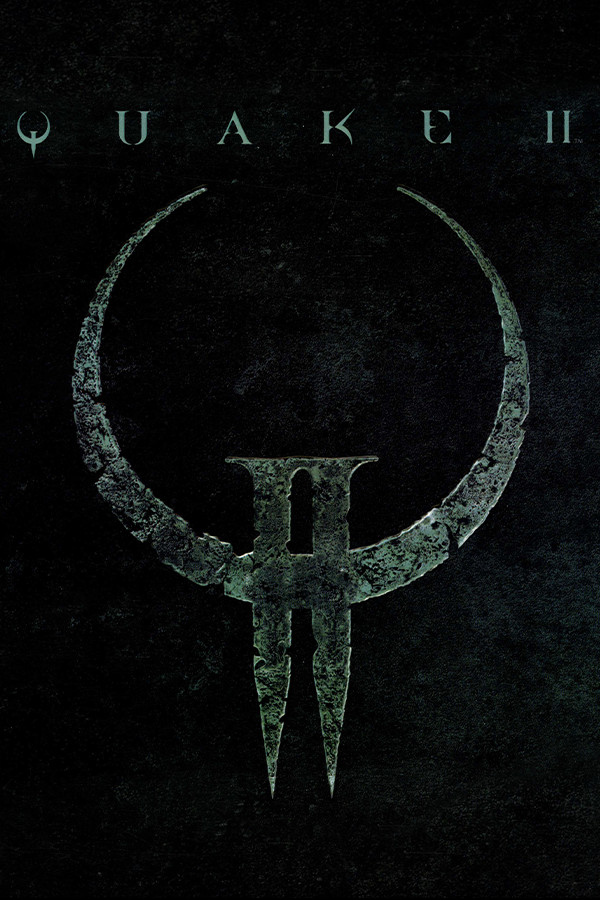

|  | |
| Playtime | Not Played |
| Last Activity | Never |
| Added | 27.12.2024 17:10:47 |
| Modified | 27.12.2024 17:13:37 |
| Completion Status | Not Played |
| Library | Gog |
| Source | GOG |
| Platform | PC (Windows) |
| Release Date | 09.12.1997 |
| Community Score | 83 |
| Critic Score | |
| User Score | |
| Genre | Action |
| Developer | Hammerhead id Software |
| Publisher | Activision Hyperion Entertainment Macmillan Digital Publishing TecToy |
| Feature | Cloud Saves Co-Op Cross-Platform Multiplayer Family Sharing Full Controller Support Multiplayer Online Co-Op Online Pvp Pvp Remote Play Together Shared/Split Screen Shared/Split Screen Co-Op Shared/Split Screen Pvp Single Player Trading Cards |
| Links | Wikipedia Wikia Twitch Steam GOG Epic |
| Tag | 1990's Action Arena Shooter Atmospheric Boomer Shooter Classic Co-op Fast-Paced First-person FPS Gore Great Soundtrack Horror Moddable Multi-Player Old School Retro Sci-fi Shooter Single-Player |
Gra Quake II id Software z 1997 roku jest docenioną pierwszoosobową strzelanką z całkiem nową fabułą i oprawą SF. Teraz możesz doświadczyć autentycznej, ulepszonej i kompletnej wersji oryginału.
Cechy
Ulepszona wersja wojskowej strzelanki SF
Oryginalne pakiety misji: The Reckoning i Ground Zero
Zagraj w nowe rozszerzenie Call of the Machine
Quake II 64 za darmo
Baw się w sieciowym i lokalnym trybie wieloosobowym/kooperacji
Graj z innymi dzięki rozgrywce międzyplatformowej
Oryginalna i ulepszona wersja gry
Poznaj oryginalną grę w ulepszonej wersji
Ciesz się oryginalną wersją gry Quake II w rozdzielczości do 4K* i na ekranach panoramicznych, z poprawionymi modelami, ulepszonymi animacjami, usprawnioną SI, ulepszonymi filmami, dynamicznym oświetleniem, antyaliasingiem, głębią ostrości, oryginalną muzyką Sonic Mayhem i innymi atrakcjami.
Zagraj w intensywną wojskową kampanię SF
Ludzkość prowadzi wojnę ze Stroggami, którzy zaatakowali Ziemię. W odwecie ludzie przeprowadzili atak na planetę Stroggów... i ponieśli porażkę, ale tobie udało się przeżyć. Wróg ma przewagę, ale musisz przedrzeć się przez jego umocnione instalacje i zniszczyć jego machinę wojenną. Od tego zależą losy ludzkości.
Zyskaj oba oficjalne pakiety misji
Quake II zawiera oba oficjalne pakiety misji: „The Reckoning” (18 poziomów kampanii i 7 map do deathmatchu) oraz „Ground Zero” (15 poziomów kampanii i 14 map do deathmatchu).
Pakiet misji: The Reckoning
W pierwszym oficjalnym rozszerzeniu do gry Quake II należysz do elitarnego oddziału, który musi zinfiltrować obiekt Stroggów. Czeka cię w nim przemierzanie instalacji przemysłowych, czołganie się przez kanały i szyby, przedzieranie się przez kaniony pełne mutantów, przeniknięcie do statku obcych i zniszczenie księżycowej bazy wroga.
Pakiet misji: Ground Zero
W drugim oficjalnym rozszerzeniu gry Quake II tobie i kilku innym marines dopisało szczęście. Dostaliście się na powierzchnię Stroggosa i wciąż macie łączność z flotą. Studnia grawitacyjna, najnowsza broń Stroggów, już działa. Flota została uwięziona na orbicie Stroggosa, a do walki zdolnych jest zaledwie 5% sił naziemnych. Sytuacja się pogarsza, więc masz nowe rozkazy: uwolnić towarzyszy i zniszczyć studnię grawitacyjną.
Zagraj w nowe rozszerzenie Call of the Machine
Nowa zawartość do gry Quake II od MachineGames oferująca 28 poziomów kampanii i 1 mapę do deathmatchu dla wielu graczy. W głębi przestrzeni Stroggów znajduje się Machina – osobliwość zdolna do załamania rzeczywistości. Walcz w czasie i przestrzeni, by odnaleźć Strogg-Makera, zniszczyć go i zmienić los człowieka i maszyny.
Quake II 64 za darmo
Baw się na 19 poziomach kampanii i 10 mapach do deathmatchu dla wielu graczy, ciesząc się przy tym oryginalną ścieżką dźwiękową w tym wydaniu Quake II dla Nintendo 64.
Baw się w sieciowym i lokalnym trybie wieloosobowym i kooperacji
Walcz z Stroggami w kampanii oraz rozszerzeniach w trybie kooperacji dla 4 graczy w sieci lub lokalnie na podzielonym ekranie i rywalizuj w stylu retro dzięki wsparciu dla meczów dla 16 graczy (online), *4 graczy (lokalnie na podzielonym ekranie) lub *8 graczy (lokalnie na podzielonym ekranie). Gra obsługuje boty dla DM i TDM w trybie offline i online.
Graj z innymi dzięki rozgrywce międzyplatformowej
Rozegraj kampanię i wszystkie rozszerzenia w trybie kooperacji lub zmierz się w bezpośrednich starciach ze znajomymi w trybie wieloosobowym bez względu na platformę, której używają! Rozgrywka międzyplatformowa jest wspierana na PC (z obsługą kontrolera), Xbox One, Xbox Series X/S, PS4, PS5 oraz Nintendo Switch.
Otrzymaj wersję oryginalną i ulepszoną
Graj w wersje, którą wolisz. Posiadając Quake II, masz dostęp do oryginalnej wersji sprzed lat, do której można tworzyć modyfikacje, oraz do ulepszonej wersji z poprawioną grafiką, nową kampanią, ulepszonym trybem wieloosobowym, rozgrywką międzyplatformową, wsparciem kontrolera i nie tylko.
* Maksymalna rozdzielczość ekranu różni się w zależności od platformy.
* Gra wspiera lokalny 4-osobowy tryb rozgrywki wieloosobowej na podzielonym ekranie.
* Na PC gra wspiera lokalny 8-osobowy tryb rozgrywki wieloosobowej na podzielonym ekranie.